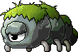

Lv. 51 · #5250001
스톤버그
엘린 숲에 사는 기묘한 벌레이다. 바위 틈에 앉아 바위를 베어 먹고 산다. 원래는 몸에 이끼가 없었지만, 바위에 붙어있는 이끼를 먹다 보니 이상하게도 온 몸에 이끼가 자라 버렸다.
스탯
레벨 51- HP
- 3,600
- MP
- 40
- EXP
- 142
- 넉백 가능 데미지
- 500+
- 물리 데미지
- 170
- 마법 데미지
- 0
- 물리 방어력
- 255
- 마법 방어력
- 200
- 속도
- -80
- 51레벨 에서의 필요 명중
- 54.99
- 메소
- 382.5
- 속성관계
- 미기재
- 체경비
- 25.35
- 형태
- 무형
출현 지역
출현 맵 3개맵 이름을 누르면 메이플노트의 맵 정보가 열립니다.
드롭 테이블
전체 4개| 아이템 | 아이템 ID | 드롭 확률 |
|---|---|---|
| 마법의 가루(노랑) | 4007004 | 0.03% |
| 마법의 가루(빨강) | 4007006 | 0.03% |
| 아대 제작의 촉진제 | 4130015 | 0.01% |
| 브라운 로이스 | 1082198 | 0.0016% |
조건에 맞는 드롭 아이템이 없습니다.
확률은 메이플노트에 게시된 값입니다. 아이템 이름을 누르면 원본 아이템 정보가 열립니다. 과거 버전 데이터이므로 실제 메이플랜드와 다를 수 있습니다.